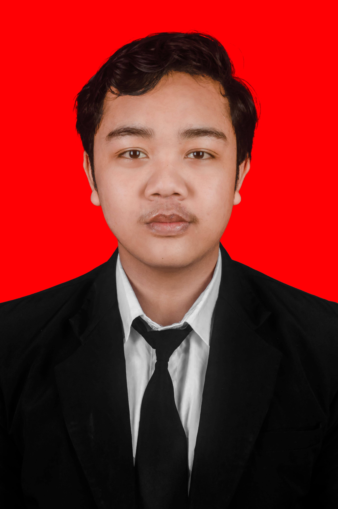

Mahasiswa Teknik Pengolahan Limbah
Saya adalah mahasiswa semester genap di jurusan Teknik Pengolahan Limbah, Politeknik Perkapalan Negeri Surabaya (PPNS). Memiliki minat yang sangat besar dalam bidang lingkungan. Sebagai mahasiswa di tahun pertama, saya sedang aktif mengasah kemampuan dasar dalam analisis laboratorium, perancangan teknis menggunakan AutoCAD, dan pengolahan data. Saya adalah individu yang mudah beradaptasi, dan bersemangat untuk belajar hal-hal baru melalui tugas akademik maupun pengalaman organisasi kampus.
2025 - Sekarang
Politeknik Perkapalan Negeri Surabaya
2022 - 2025
Jurusan MIPA
2019 - 2022
2013 - 2019